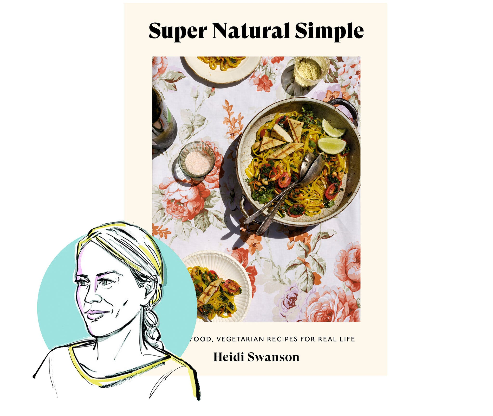

Courtesy of Chronicle Books
“Grist: A Practical Guide to Cooking Grains, Beans, Seeds and Legumes”The obvious reasons you should eat more grains, beans, seeds and legumes — to benefit your health and pocketbook, not to mention the environment — are not cause to be excited about them. Abra Berens, a Michigan-based writer, chef and former farmer, takes care of that in her latest book, “Grist” (Chronicle Books). The easy-to-follow recipes highlight the culinary virtues of these shelf-stable ingredients. You also get solutions to problems that will inevitably arise if, for instance, you decide to cook in large batches. (See “A week’s worth of barley without any boredom.”) Ms. Berens’ exhaustive-but-approachable book pairs practical advice with good taste, empowering readers to, as she puts it, “cook beyond the page.” Before you know it, you’ll be soaking the lima beans before you put away the rest of the groceries. BRETT ANDERSON
Courtesy of Clarkson Potter
“Rodney Scott’s World of BBQ: Every Day Is a Good Day”You don’t need a grill to appreciate “Rodney Scott’s World of BBQ” (Clarkson Potter). The recipes are built on a foundation of sauces and rubs that deliver the spirit of Mr. Scott’s style of South Carolina barbecue in wedge salads and marinated tomatoes you can make even if you live in a fifth-floor walk-up apartment. Just like a friend, he shares the foods that have impacted his life, like fried chicken or macaroni and cheese, and the secret to his big flavors, M.S.G., which he affectionately calls Jesus’s Tears. SARA BONISTEEL & CHRISTINA MORALES
Courtesy of Clarkson Potter
“Cookies: The New Classics: A Baking Book”Jesse Szewczyk knows there’s been a lot said about cookies. He says as much in the introduction of his new cookbook. Still, he tackles the subject admirably — and extensively. Most of his 100 recipes in “Cookies” (Clarkson Potter) are simple — many are mixerless, some no bake, as indicated by helpful icons — and all are deeply flavored. Chocolate chip cookies are run through with molasses and buckwheat, lavender or smoked butter. A sugar cookie is enhanced with cilantro and lime. Fudge squares are flavored with absinthe. If you want to stick to the traditional, this may not be the book for you, but if it’s a little adventure you seek, these cookies await. KRYSTEN CHAMBROT

Courtesy of Harper Collins
“Lemon, Love & Olive Oil”By Mina Stone
You don’t need to be obsessed with lemons and olive oil to appreciate the fresh Greek-influenced dishes in Mina Stone’s new cookbook, “Lemon, Love & Olive Oil” (Harper Collins). But if you are, you might fall head over heels. Ms. Stone gained a reputation for cooking creative yet unfussy meals for New York City artists and gallerists before opening a restaurant in MoMA’s PS1 in 2019. The recipes in this collection hit that sweet spot between clever, chef-driven flourishes like pressing oregano sprigs into steaks before searing until fragrant, and the home-cooked practicality of a simple yet stellar pappardelle with chickpeas, walnuts and plenty of lemon. These lively weeknight-friendly staples are rounded out by traditional dishes she learned in Greece while visiting her grandmother: fried halloumi with lemon slices; spanakorizo (spinach rice with dill); and soutzoukakia, cumin scented meatballs with tomato sauce and, of course, loads of good olive oil. MELISSA CLARK
Courtesy of University of North Carolina Press
“Rice: A Savor the South Cookbook”By Michael Twitty
What most cooks don’t know about rice is a lot. That’s why “Rice,” the 25th and final installment of a sharp collection of slim, single-subject volumes exploring Southern food from the University of North Carolina Press, is a good book to have on the shelf. The author is Michael Twitty, a food historian and cook dedicated to connecting the American table to Africa and points beyond. The 50 or so recipes take a loop to Mexico, Thailand and Cuba, but come to rest on the Afro-influenced Southern table. He deftly weaves together the global history in a bowl of red beans and rice, and champions rice in breads and desserts. As a cookbook, instructions can be imprecise. (A recipe for Limpin’ Susan, a dish of rice and okra seasoned with bacon, is missing a cup of liquid.) But his version of groundnut stew with chicken, built from his memories of his first few trips to Africa, is now in regular rotation in our house. KIM SEVERSON
Courtesy of Harper Design
“My Shanghai: Recipes and Stories From a City on the Water”By Betty Liu
Betty Liu’s “My Shanghai: Recipes and Stories From a City on the Water” (Harper Collins) is an expertly laid-out book full of enriching recipes and stories. The opening chapters set a foundation of ingredients, equipment and history that serve as reference points for readers throughout the book, which is organized by season to great effect. Technique-heavy dumpling recipes are consistently paired with a step-by-step gallery of images, walking readers through the process of assembling them, and there are recipes for any range of time commitment, from the ready-in-minutes tomato and egg stir-fry, to the slow-cooked Shanghai red-braised pork belly. This is a book to revisit regularly for comforting food, seasonal inspiration and to refine your cooking techniques. GORDON DIGGS
Courtesy of Ten Speed Press
“Super Natural Simple: Whole-Food, Vegetarian Recipes for Real Life”By Heidi Swanson
When I picked up “Super Natural Simple” (Ten Speed Press), I asked myself would the recipes really be simple? Or “simple” from the perspective of a person who cooks and photographs food for a living? I was delighted to discover that all of the recipes are truly easy to follow, and many would even work on a time-crunched weekday. Her waffles were light and crispy (my kids loved them), and the peanut stew with spinach and miso was creamy and deeply satisfying (my carnivorous husband loved it). Give this as a gift to anyone looking to incorporate more plant-based recipes into their lives, especially a novice cook who might be a little nervous in the kitchen. As for me, the nutritional yeast biscuits are calling my name.
Courtesy of Avery
“The Korean Vegan Cookbook: Reflections and Recipes From Omma’s Kitchen”By Joanne Lee Molinaro
oanne Lee Molinaro, a lawyer turned blogger, built a following as @thekoreanvegan on TikTok, with elegantly produced videos and soothing, affirming voice-overs. But what has hooked her 2.7 million fans is the food: stunning vegan versions of Korean staples, from simple stews and banchan to homemade meat substitutes and kimchi of all kinds. Woven throughout the recipes, both in her videos and, now, in her cookbook, “The Korean Vegan” (Avery), are family stories of immigration, assimilation, grief and nostalgia. When Ms. Molinaro became vegan at age 37, she worried that her family recipes — many from her omma (mother) — couldn’t be replicated without Spam, fish sauce or eggs. But through recipes like “fishy sauce” (made funky with kelp and dried mushrooms) and with some store-bought substitutes (she’s a big fan of the Just brand faux egg), Ms. Molinaro’s tributes satisfy her, and will wow you. BECKY HUGHES
Courtesy of Clarkson Potter
“Sheet Cake: Easy One-Pan Recipes for Every Day and Every Occasion”By Abigail Johnson Dodge
“Sheet Cake” (Clarkson Potter) is a true testament to the versatility of the half sheet pan. Long associated with quick dinners, it’s also the key to large-format desserts, as demonstrated in this book from Abigail Johnson Dodge. She offers 50 cakes — sheet cakes, stacked cakes, rolled cakes, even ice cream cakes — and many fillings, soaks and frostings to make them your own. The yields are large. The recipes are simple enough for a beginner, and practical enough for the seasoned baker. And the flavors are sophisticated: A Mexican brownie ice cream cake had a deeply cinnamon chocolate base, a carrot cake was so bright with orange zest and warmly spiced that it felt alive. I delivered slices to friends and neighbors, and received nothing but joyful and curious texts in thanks. KRYSTEN CHAMBROT
Courtesy of Paidon
“Middle Eastern Sweets: Desserts, Pastries, Creams and Treats”By Salma Hage
Beware the glossy coffee table book masquerading as a cookbook: Lovely to look at, but the recipes are often unreliable or just downright bad. On the surface, James Beard award-winning cookbook author Salma Hage’s latest book — beautifully photographed with a cover the color and texture of unbleached linen with a built-in ribbon bookmark — threatens to fall into that category, but thankfully, the recipes are just as well thought out as the design. “Middle Eastern Sweets” (Phaidon) is full of traditional recipes like baghir, or 1,000-hole Moroccan pancakes, as well as nontraditional East-meets-West sweets like tahini swirls, a Lebanese twist on cinnamon rolls. The recipes are easy to follow and work beautifully; the tahini cheesecake, a bittersweet dessert topped with crumbled halvah and date syrup, is a revelation. And the ma’karons, a pistachio and almond cookie reminiscent of a French macaron, are chewy and light lemony delights that come together in a half-hour. MARGAUX LASKEY
Courtesy of Clarkson Potter
“Cook Real Hawai’i”By Sheldon Simeon with Garrett Snyder
“What is the food of Hawai’i?” is a question the chef and author Sheldon Simeon gets asked frequently. In “Cook Real Hawai’i” (Clarkson Potter), Mr. Simeon, a former “Top Chef” contestant and James Beard nominee, deftly navigates the various ethnic influences that pour into the islands’ culture, as opposed to defining the cuisine as a homogeneous, geographical catchall. Influencers include the Japanese, the Kānaka Maoli (native Hawaiians), Haoles (Westerners) and Portuguese communities. Recipes that seem familiar like kalbi, katsu curry, arroz caldo and pancit are peppered throughout the book but infused with a new spirit. While the “Heavy Pupus” chapter (or the various pokes alone) may tempt readers to book the next flight to the island, many of the dishes, such as chicken barbecue, garlic shrimp or pork and peas, can be deployed easily at home, so feel free to stay put — and you’ll find new rotation of dishes lighting up your weeknight dinners. ELEANORE PARK
By Zoe Adjonyoh
Before reading “Zoe’s Ghana Kitchen” (Voracious) I had almost no knowledge of West African food, but through stunning photography and vivid descriptions of Ghanaian markets, I felt invited into Zoe Adjonyoh’s world. She succeeds in her mission to familiarize the reader with the flavors and ingredients of West African cuisine. The extensive ingredient guide provides ample descriptions, and if you can’t find something locally, ingredients are readily available online. I was delighted as each dish, fragrant and familiar, came together with ease. “I’d love to see more people incorporating West African ingredients and flavors into their everyday cooking …” Ms. Adjonyoh writes in the introduction. She provides a path for that, too, with riffs on well-known recipes like the Ghana-fied Caesar salad and a goat ragu. TIFFANY PÉON
Courtesy of W. W. Norton & Company
“Ripe Figs: Recipes and Stories From Turkey, Greece and Cyprus”By Yasmin Khan
Dedicated to the refugees of Greece, Turkey and Cyprus, “Ripe Figs” (W.W. Norton & Company) has a political heartbeat. But it is also a terrific set of recipes collected during her year weaving through those three countries. I wanted to make almost all of them. There were delicious surprises, like candied pumpkin with tahini and date syrup. Other recipes seemed like well-plowed territory until I dug in. Even the most familiar dishes offered one or two touches I hadn’t thought of, or a little pro tip that made all the difference. She punched up potato salad with olives and lots of mint and capers. She made muffins with halloumi and mint. She set her morning eggs on a bed of garlic-infused yogurt slicked with chile oil. She even elevated the most basic recipe — a spatchcocked, roasted chicken — with a marinade heavy with paprika and thyme. KIM SEVERSON
Courtesy of Artisan Books
“The Magic of Tinned Fish: Elevate Your Cooking With Canned Anchovies, Sardines, Mackerel, Crab and Other Amazing Seafood”By Chris McDade
Canned seafood is enjoying a moment among U.S. consumers, but it shouldn’t be a fleeting one. For the razor clam-curious, Chris McDade’s “The Magic of Tinned Fish” (Artisan Books) is a comprehensive introduction to the original fast food — shelf-stable seafood packed in olive oil. With an eye toward convenience, sustainability and deliciousness, Mr. McDade guides readers through the world of canned seafood options by way of thoughtful recipes and helpful tips for what to look for and expect from each can. Throughout the cookbook, tinned fish alternates between lead actor (mackerel cakes with cabbage and cilantro; beer-battered sardines with harissa) and cameo appearance (roasted romaine and mushrooms with anchovy-laden Caesar dressing; roasted pork loin with mackerel-spiked “tonnato” sauce), equipping readers with a variety of creative approaches that go beyond “fish on toast.” Though more obvious preparations are provided, too, for those midweek lunches where you can’t muster up much more than smoked oysters, saltines and hot sauce. TANYA SICHYNSKY>
How We Tested These Books
Two testers reviewed every book we considered this year. They were asked to read the books cover-to-cover and to choose three to four recipes to try (like any home cook would!). Testers were asked to consider how easy it was to find ingredients and to cook the recipes exactly as written, assessing whether the recipes not only worked but lived up to their expectations as well. Finally, we asked our testers to give us a final impression of the book: How likely were they to recommend it to a friend or family member? Did it open their eyes to a way of cooking they hadn’t considered before or introduce them to a new spin on an old favorite? And most important, would they cook from it again? If both testers gave the cookbook a thumbs up, it landed on this list. As a final note, we did not test or include cookbooks from recipes writers who work with New York Times Cooking or New York Times Food to avoid any conflict of interest. But we have highlighted the work of these writers below.